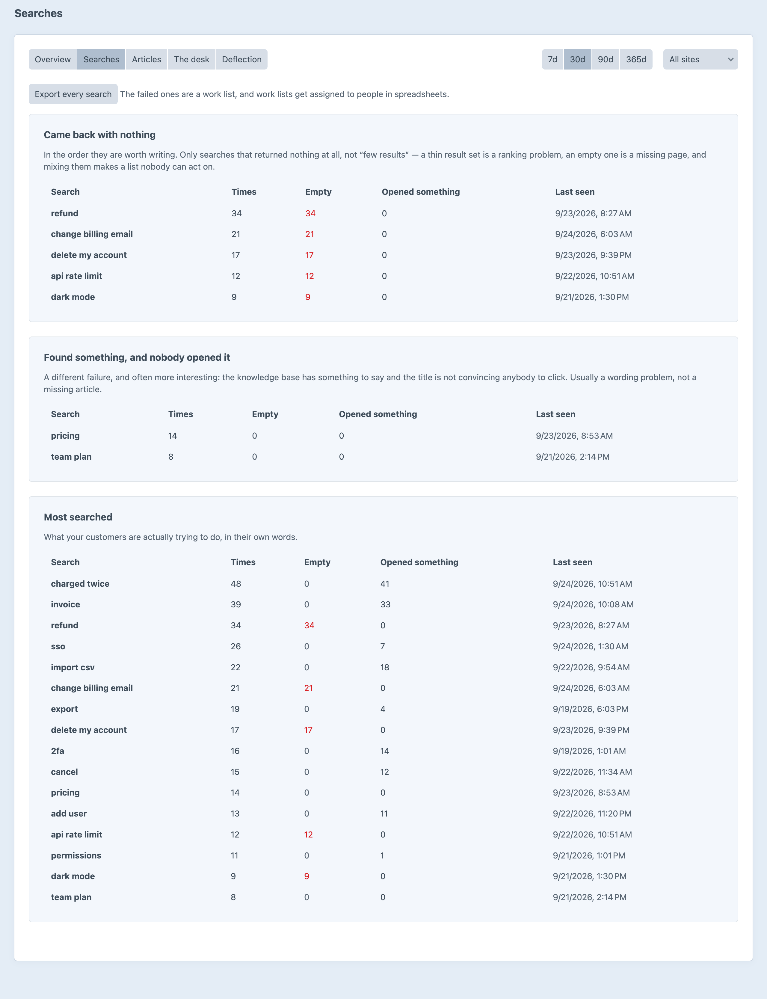
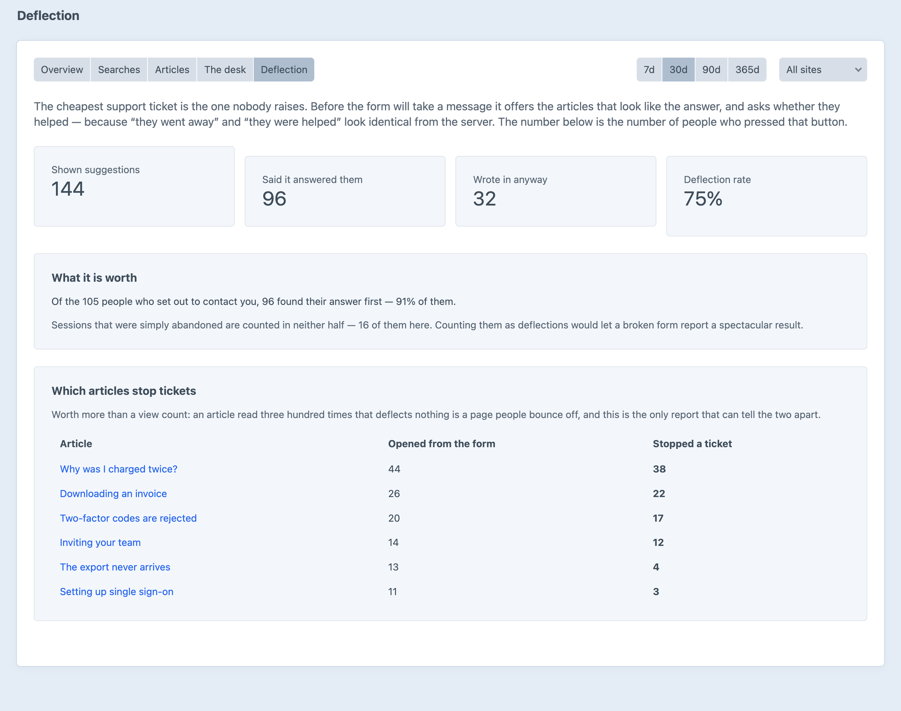
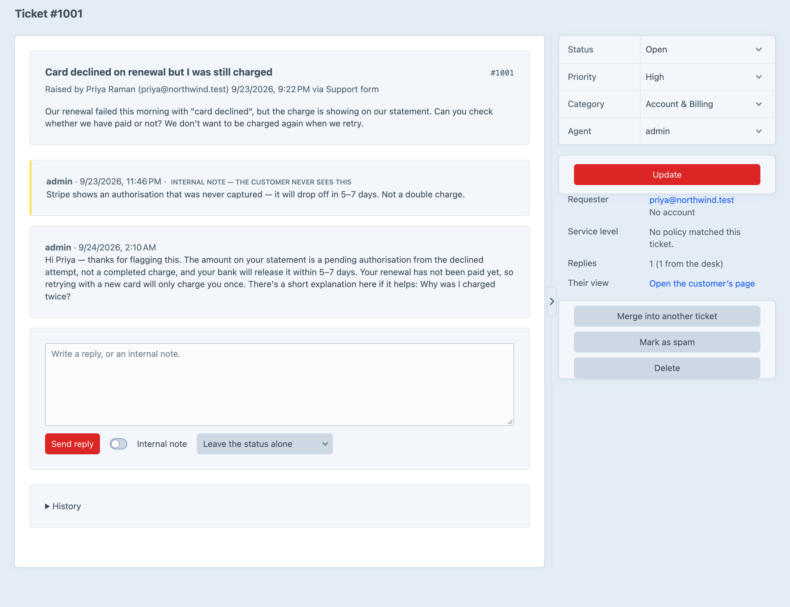

A knowledge base and a support desk.
The cheapest ticket is the one
nobody raises.
Every search is logged with what it found. The ones that came back empty are ranked by how many people hit the same wall.

“They went away” and “they were helped” look the same from the server. So CSR asks, with one button, and counts the people who pressed it.

As somebody types a subject, the support form shows the articles filed under it.
While a ticket waits on the customer, the resolution clock stops counting against you, and the time comes back when they reply.
Most people who write to support have never logged in. A private link lets them read and reply to their own ticket.

No cap on articles, categories or tickets in either edition. Pro is what starts to matter once one person cannot read everything.